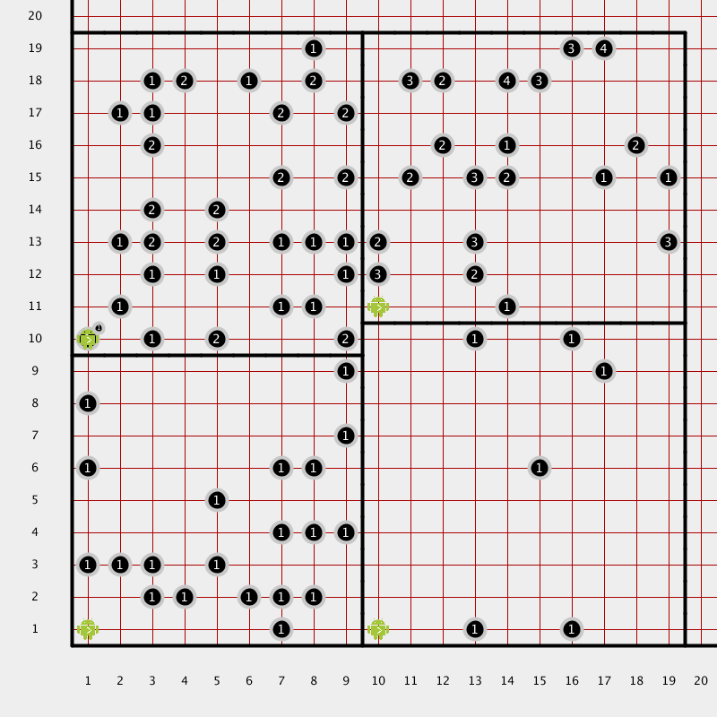
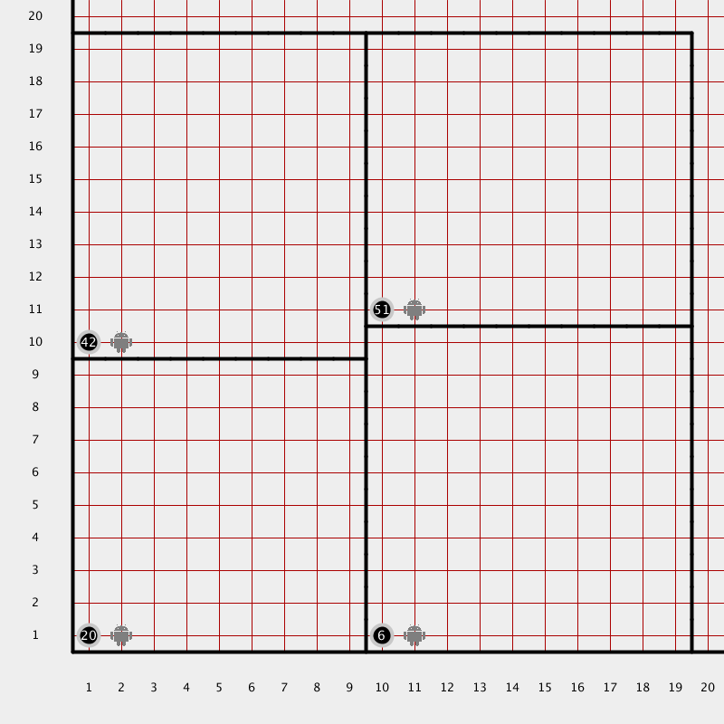

Variables
Description
OH NO! Karel's beepers have been scattered again! 
{kind=link}
This time we need to place the cleaned up beepers into a pile on (1, 1)
{kind=link}
Counting with Variables
A variable is a named bucket that holds one piece of information. The information is always of a particular type.
The most common type of variable is an integer. Integers are numbers without decimal places. They are perfect for counting.
// declare a variable and store a number int x = 3;
// store the result of a calculation int x = 4 + 5 * 2; // x should now be 14
// the type only needs to be used the first time int x = 4; x = 5;
// you can print numbers to the console
int x = 4;
println(x);
println(37);
// you can combine numbers and text in the output
println("The number x is " + x);
One of the most common operations you can perform on an integer is adding one to the current value. This is called incrementing.
// declare x int x = 0; // increment x x = x + 1; // x is now one // another way to increment (shorter sytax, same operation) x++; // x is now 2 // the opposite of incrementing is called decrementing x = x - 1; // x is now 1
Using Variables With Loops
Sometimes you want to have code repeat an exact number of times. You can use an integer and a while loop to accomplish this.
// move exactly thirteen times
void moveThirteen() {
int i = 0
while (i < 13) {
move();
i++;
}
}
// another way, counting down
void moveThirteenAlso() {
int numMoves = 13;
while (numMoves > 0) {
move();
numMoves--;
}
}
Functions and Variables as Inputs
Functions can be made more useful by giving them input variables, called parameters. Parameters allow your functions to do different things based on the input, such as repeat a block of code a given number of times.
// move n times
void moveAlong(int n) {
while (n > 0) {
move();
n--;
}
}
To use a function that has parameters you must feed it specific info for each parameter. These specific data (numbers in this case) are called arguments. Using different arguments throughout your code allows you to reuse functions and still have them do different things.
// using the previously declared moveAlong function moveAlong(3); // three is the argument, and how many times it moves moveAlong(7); // this time the argument is 7 int anInteger = 6; moveAlong(anIteger * 3) // move 18 times